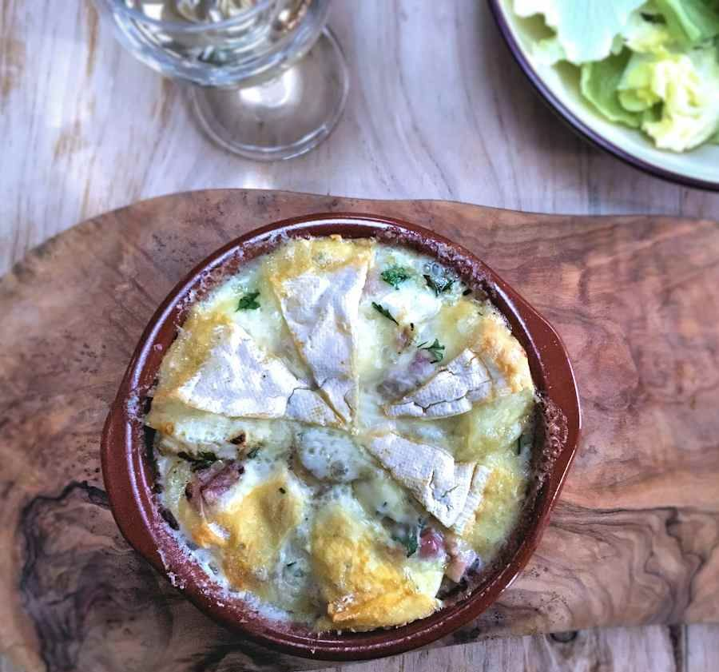

Tartiflette

Description
the Tartiflette is a french recipe based on potatoes gratin, onions and bacon, all gratinated with reblochon cheese
(from the Savoy region). Learn more.
Ingredients
- 2 yellows onions, thinly sliced
- 1 cup dry white wine
- 3 tablespoons creme fraiche
- 1/2 round Reblochon cheese, sliced lengthwise
- Pinch ground nutmeg
- Pinch freshly ground black pepper
- 2 to 3 large unpeeled cloves garlic
- Olive oil, for drizzling
- 2 1/2 pounds waxy potatoes, new or round white potatoes
- Kosher salt
- 1 tablespoon canola oil
- 1 1/4 cups diced smoked bacon
Steps
- Preheat the oven to 375 degrees F.
- Trim the tips off the garlic, then place them in a small foil pouch and drizzle with olive oil.
- Wrap the garlic and bake until the cloves are browned and soft, 25 to 30 minutes.
- Remove and let cool. Scoop out the flesh with a fork and mash in a small bowl, then set aside.
- While the garlic is roasting, peel and slice the potatoes into 1/2-inch slices.
- Bring a large pot of salted water to a boil over high heat.
- Add the potatoes, reduce the heat to medium low and simmer until just tender, about 15 minutes.
- Check the tenderness with a fork every 5 minutes; the potatoes should not get too soft as to lose their shape.
- Drain the potatoes and allow them to steam dry.
- Heat the canola oil in a large frying pan over medium heat.
- Add the bacon and cook, stirring occasionally, about 5 minutes.
- Add the onions to the pan and stir constantly until the onions soften and are slightly browned, about 10 minutes.
- Pour in the wine and continue stirring for about 2 minutes, and then blend in the creme fraiche.
- Place the cheese directly on top of the mixture, rind-side up, and let melt; do not stir the cheese while it is melting.
- Add the nutmeg, pepper and some salt.
- Once the cheese is completely melted, add the sliced potatoes and mashed garlic and stir very gently to keep the potatoes intact.
- Once everything is mixed together, let brown for about 5 minutes.
- Serve and Enjoy